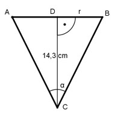

Aufgabe 81 Die Grundfläche eines kegelförmiger Kelches hat einen Umfang von 35,2 cm. Seine Höhe beträgt 14,3 cm. Wie groß ist der Winkel α an der Spitze des Kelches?

U = 2 * π * r | : 2 * π U 35,2 cm r = -------- = ------------ = 5,6 cm 2 * π 2 * π Im Dreieck ABC: r 5,6 cm tan α/2 = --------- = ---------- = 0,3916 14,3 cm 14,3 cm --> α/2 = 21,4° |*2 α = 2 * 21,4° = 42,8°